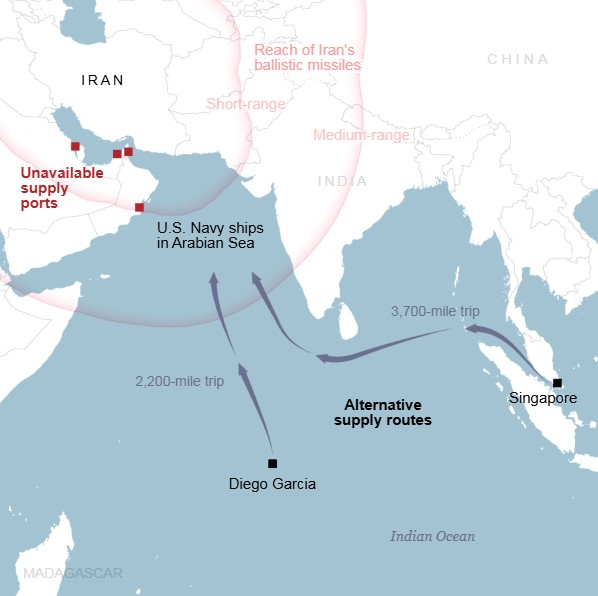
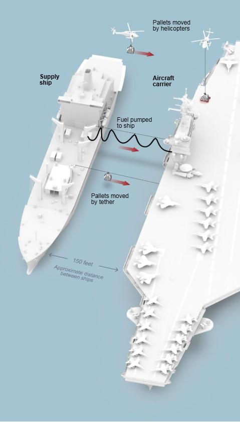

The Navy has operated there for decades and built supply depots throughout the region.
But Iran destroyed a critical Navy logistics base in Bahrain on Feb. 28, the first day of the war, and other ports in the region that can accommodate an aircraft carrier or a supply ship are also within range of Iranian missiles and drones, making them inaccessible.

Navy supply ships in the region now have to travel 2,200 miles to a tiny island in the Indian Ocean called Diego Garcia to bring food, fuel and other goods to the warships in the Gulf of Oman and the Arabian Sea.
The next option is to go to Singapore, 3,700 miles away — which requires the ships to pass through the Strait of Malacca, a busy commercial corridor.
Because the war has cut off access to nearby bases in the Middle East, the only option is to undertake resupply missions at sea every five or six days.
This process is potentially hazardous, exposing both the receiving ship and the supply ship to risk.
During these missions, both ships need to travel together, keeping precisely the same course and speed. With waves, winds and current, it’s a challenge to keep the ships safely within about 150 feet of each other for hours.

Sailors use rifles to fire lines from a carrier or destroyer to the supply ship, eventually connecting the two ships with steel cables. Fuel lines and pallets of goods are then sent over on those cables.
At the same time, helicopters ferry supplies between the ships, carrying pallets of food, spare parts and mail in nets slung underneath.
The deployments for these warships are open-ended — they only go home once the president and the defense secretary decide so.
However, this is not sustainable.
The Navy has only 11 aircraft carriers in total, and has sent four of them to the Middle East for the war. Some of the remaining carriers are undergoing lengthy repairs in shipyards and will not be able to deploy again for years.
One carrier, the U.S.S. Abraham Lincoln, spent most of its nine months at sea with no port calls. Under normal conditions, a Navy carrier would visit port about once a month to give its crew a brief rest. On Aug. 20, the Lincoln was relieved by the U.S.S. George Washington and began making its way back home. The Lincoln was expected to make a stop on Wednesday in Thailand for a few days before continuing across the Pacific to its home base in San Diego.
Note: Fleet composition from the U.S. Naval Institute Fleet Tracker as of Aug. 31. Missile ranges are from the Center for Strategic and International Studies Missile Defense Project.